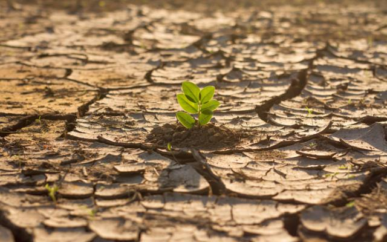

El cambio climático representa uno de los mayores desafíos a los que se enfrenta la humanidad en el siglo XXI. Las evidencias científicas son claras: las actividades humanas, principalmente la quema de combustibles fósiles y la deforestación, han provocado un aumento sin precedentes de las concentraciones de gases de efecto invernadero en la atmósfera, lo que está causando un calentamiento global y alteraciones profundas en el sistema climático del planeta.
Las consecuencias del cambio climático son cada vez más visibles y preocupantes. El aumento de las temperaturas medias globales está generando olas de calor más frecuentes e intensas, derretimiento acelerado de los glaciares y casquetes polares, y elevación del nivel del mar, que amenaza a las zonas costeras y a las islas bajas. Además, los cambios en los patrones de precipitación están provocando sequías, inundaciones y otros fenómenos meteorológicos extremos, con graves impactos en la agricultura, la seguridad alimentaria y los ecosistemas.
Estos impactos del cambio climático también tienen repercusiones en la salud pública, al facilitar la propagación de enfermedades infecciosas, y pueden contribuir a la inestabilidad social y política, generando conflictos y desplazamientos forzados de población.
Para hacer frente a este desafío, es urgente que se implementen medidas de mitigación y adaptación a escala global. Esto implica reducir drásticamente las emisiones de gases de efecto invernadero, a través de la transición hacia energías renovables, la mejora de la eficiencia energética y la protección de los bosques. También es crucial fortalecer la resiliencia de las comunidades y los sistemas socioeconómicos ante los impactos del cambio climático.
La acción climática requiere un esfuerzo coordinado y la participación de todos los sectores de la sociedad: gobiernos, empresas, organizaciones de la sociedad civil y ciudadanos. Solo a través de una respuesta integral y ambiciosa podremos mitigar los efectos del cambio climático y asegurar un futuro sostenible para las generaciones presentes y futuras.
 Inicio